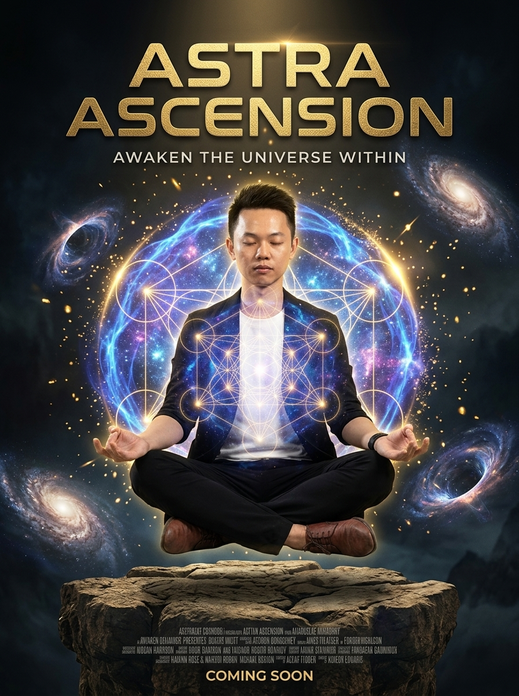

Ma Sát Nội Tâm

Hành trình vươn lên năng lượng bậc cao là một quá trình làm sạch 3 tầng: Vật Lý, Cảm Xúc và Cốt Lõi. Khi triệt tiêu được ma sát nội tâm, ta sẽ đạt được trạng thái đồng nhất hoàn hảo.
Tầng Vật Lý - Nhịp Sinh Học
Cắt đứt dữ liệu rác, bảo vệ cơ thể khỏi những kích thích tiêu cực. Tối ưu nhịp sinh học để có nền tảng vững chắc.
Ẩn dụ: Như việc dọn sạch rác trong ngôi nhà trước khi mời khách quý.
🎋 Quét đi rác rưởi quanh mình
Cho thân nhẹ nhõm đón bình minh lên
Tầng Cảm Xúc - Triệt Tiêu Ma Sát
Kiểm soát những biến động, triệt tiêu ma sát nội tâm gây tiêu hao năng lượng. Giữ lòng phẳng lặng trước bão giông.
Ẩn dụ: Mặt hồ tĩnh lặng mới có thể phản chiếu rõ bầu trời.
🎋 Ma sát triệt để buông lơi
Mặt hồ phẳng lặng mây trời in sâu
Tầng Cốt Lõi - Sự Đồng Nhất
Đạt được sự đồng nhất (alignment) từ sâu bên trong. Lời nói, suy nghĩ và hành động phải là một.
Ẩn dụ: Mũi tên chỉ trúng đích khi cung, dây và người bắn cùng một nhịp.
🎋 Thân tâm đồng nhất một dòng
Nói suy hành động xoay vòng vươn xa
Thiền Định - Vươn Lên Bậc Cao
Dùng thiền định để kết nối cả 3 tầng, nâng cao tần số rung động và chạm đến mức năng lượng tối cao.
Ẩn dụ: Ngọn đuốc rực sáng xua tan mọi bóng tối của sự mơ hồ.
🎋 Thiền định vượt cõi sương mù
Năng lượng bừng sáng phá tù tâm can
Đúc Kết: Năng lượng bậc cao không phải là thứ lấy từ bên ngoài, mà là kết quả của việc dọn dẹp sạch sẽ những cản trở bên trong.
"Hãy giữ cho tâm phẳng lặng để mặt hồ có thể phản chiếu được bầu trời."